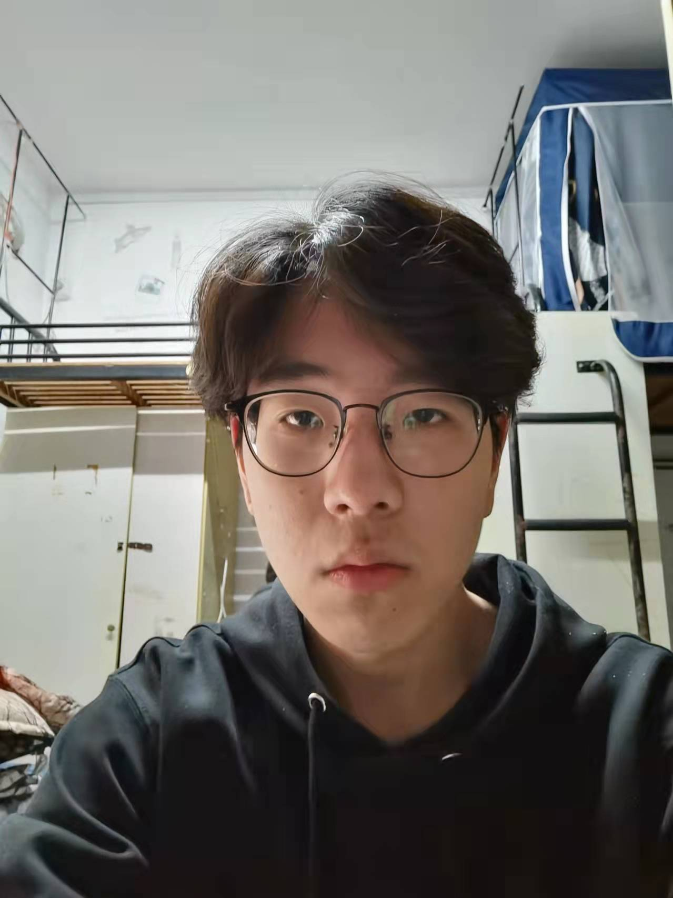

Advance：Gordon
Self-introduction
Resume Summary
I am a independent and creative college graduate.I am good at communicating with others in English.A strong link between theoretical knowledge from an advanced diploma.And I passed cet-4 in college.I am very interested in learning computer technology. I usually study all kinds of software and languages and am good at software development.I often learn relevant software development technology by myself on the Internet and learn by watching relevant technology videos.